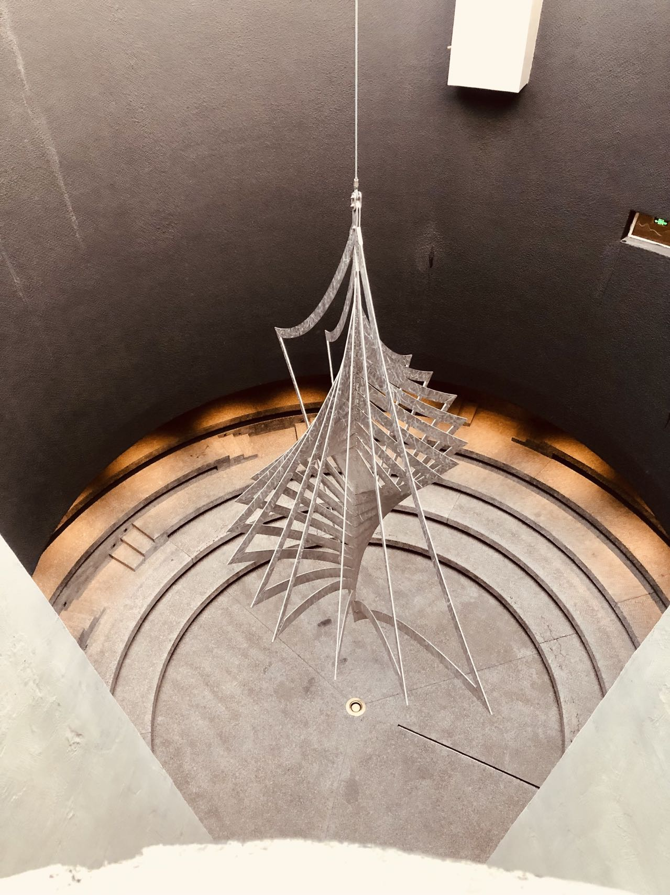
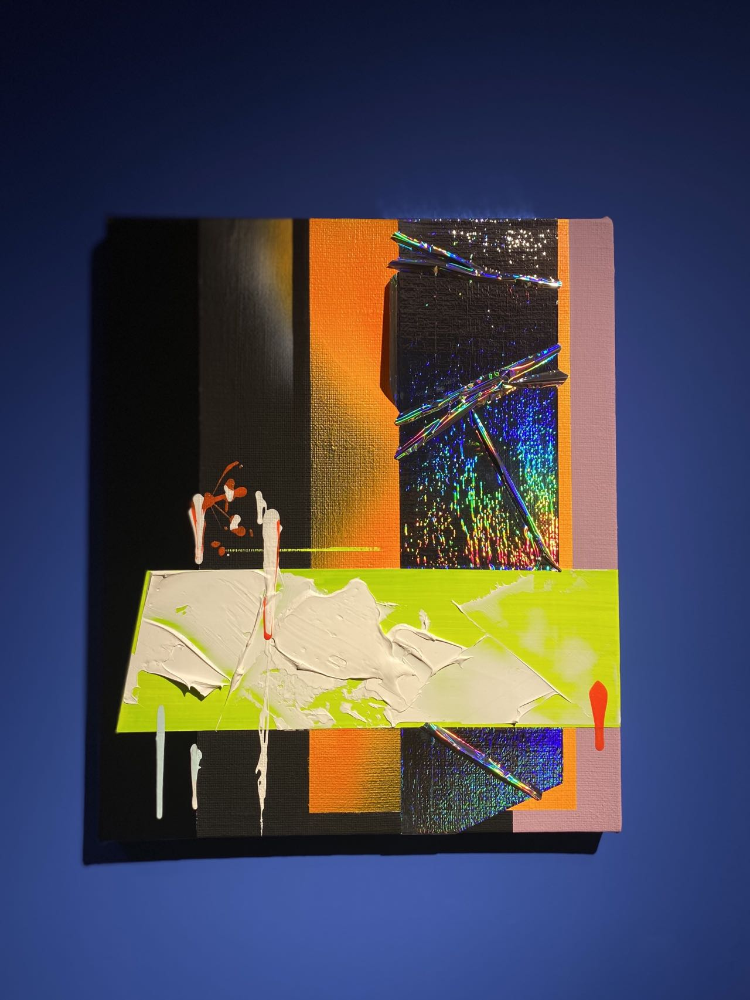
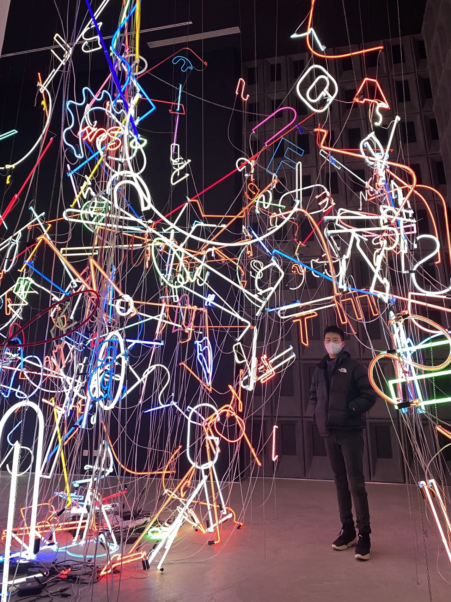
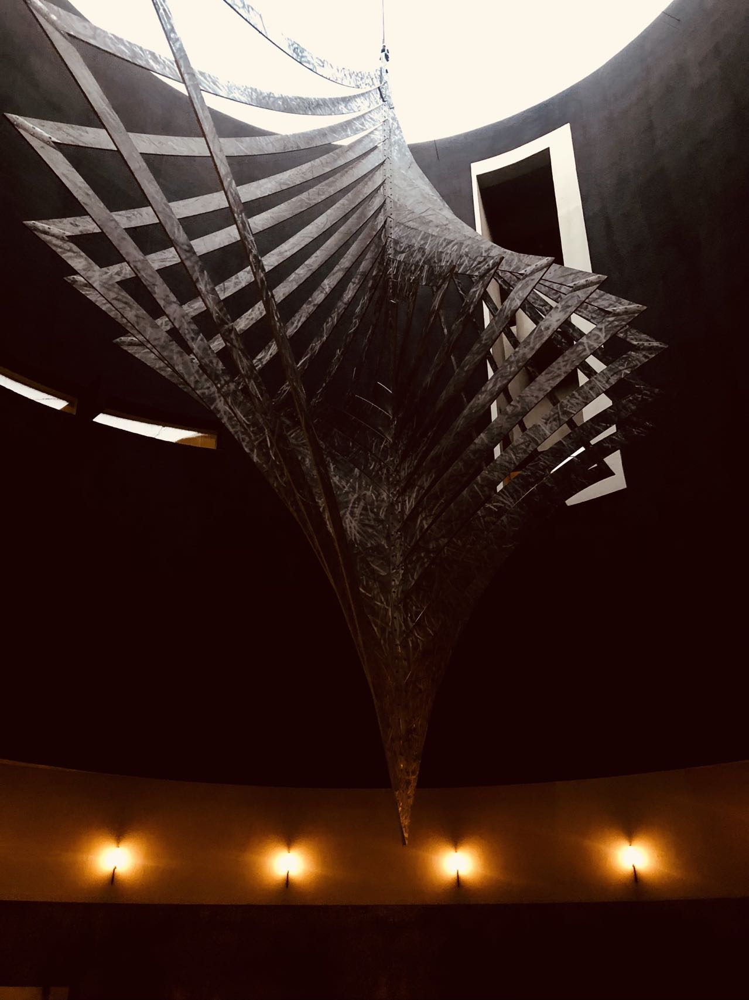

"當我們談論永恆時"
"What is eternity?"
With the development of the society and technology, we can use the camera, video recorder to capture unforgettable moments. However, how can we breathe the air at that moments? If we will forget the story about the pictures or photoes? Nothing is eternal expects time, and what we only can do is make the time 'SLOWER'.
Images





Photo at Aranya Arts Center
Some Works

The shape of 'Wind Chimes' is taken from the geometric metal decoration the artist procured from the Berlin Christmas market ten years ago. After being enlarged by dozens of times, the wind chimes have also been
transformed from handicraft to artwork.Looking down from the circular window, the huge wind chimes rotate slightly with the wind, as if bringing the author back to that Christmas day ten years ago. I happened to be there during the
Christmas season. In the bleak breeze, I have realized that the meaning of the 'DALIY-LIFE'S ART'.

As its name shown to us 'After Forever' , we want to find the meaning of eternity. The visitors with kinds of backgrounds come from the different areas, and each one will have the different answer of this question.
Just like this work, and you can see the calm lake in front of you eyes if you sit here and watch its turing on the celling. As if the time is slow down, when we are watching it. It shadow changes every second with its turning, and
we will feel the flow of time concretely in another way.
The right photo is another part of 'Wind Chimes', and it is the smaller one.

Useful & Unuseful
Recently, 'ART' appears in our life with high frequency, and its bar is getting lower and lower, which menas more and more people in China can realize the art, and emjoy it. The discussion about the value of art is very hot, and some think the art should attach some additional human significances, but others just enjoy it. From my perspective, everything in this world has its own meaning, and everyone has different view points on the same thing.Just like the word of Real, " Why can't art be decoration? " We don't need to give anything a lebal, just look, enjoy, and think the unique meaning of the art belongs to yourself.
Actually, as an undergraduate student with the major of computer science, I always think a question that what is the Art? I know it looks like a little stupid, but I keep falling into the whirlpool. I told myself, 'Stop thinking that!!!' after a brainstrom. This is a road without the END, and as that word 'There are a thousand Hamlets in a thousand people's eyes.' Not everthing has the answer, and just exploring every minutes in your own road. Almost nothing is eternal, but keep exploring, feeling, thinking are the eternal things in one's life.
Monologue
Time stole away, the calendar when I wrote this words was already Janaury, 2022 in my dormitory, CUHK. Look back the past year, I almost forgot the world without the COVID-19. Many things that we think are eternal have changed in the
past two year. This has to make me think what is the real 'eternity', and something that we can control is too precarious under the sudden condition. But this moment is in your own hands, you can choose read the book you like,
talk with others you appreciate...
I have thought what is the real futrue of art and technology for a long time. Many want to give an order to them, and I'm no exception. Until the coming of the monster named COVID-19, I have realized that their relations.
We don't know what will happen tomorrow, maybe the technology will disappear, the science will back off after a war, or the new concept appear out of thin air and swept the world. Emmmmm, I mean I got the answer, we should make
the purpose initially. Some want to use tech to make their art work got more expressions, and some want to use add art elements into their tech, which can attract more people. Therefore, we don't need give a final judgement for
this. Just take easy and do what you really want to do, use all things to make your work or product perfect and attractive.